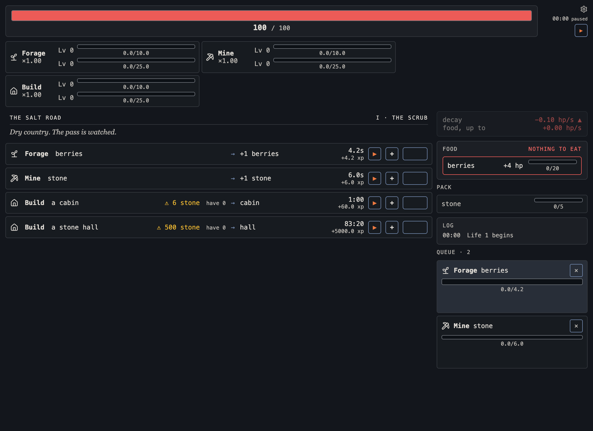
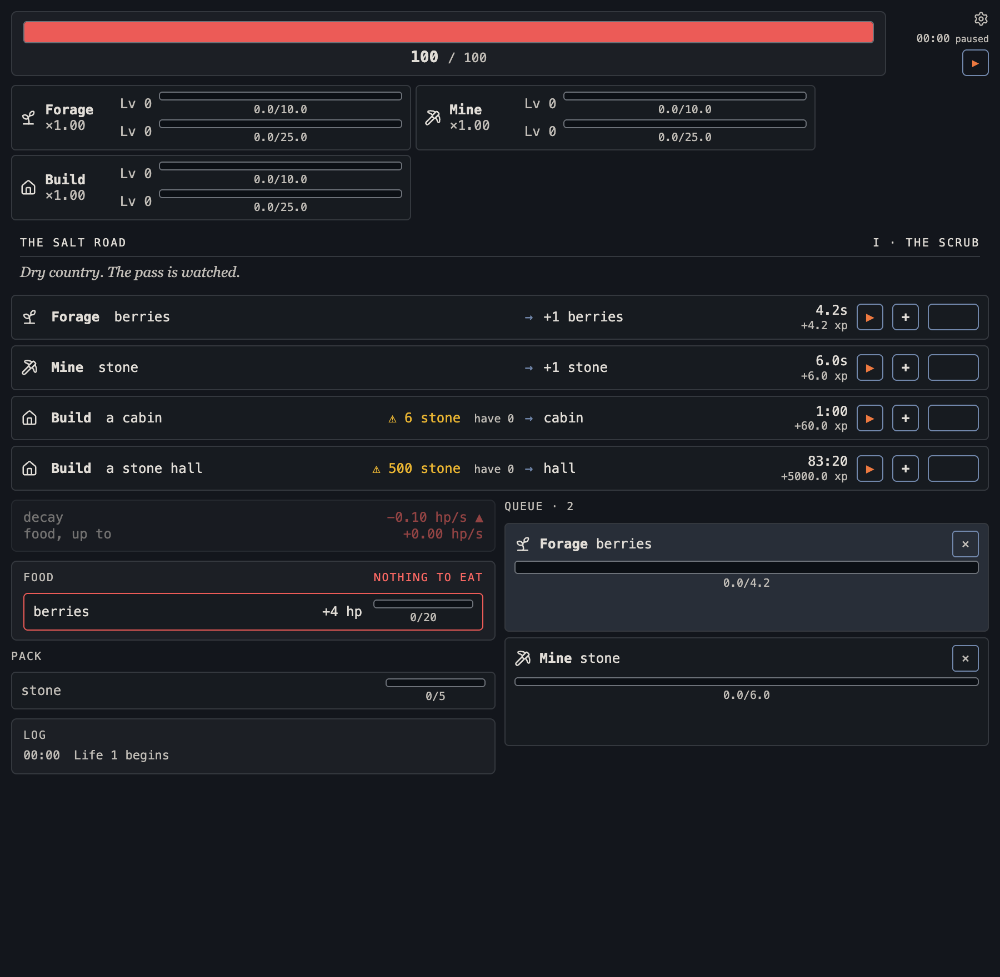
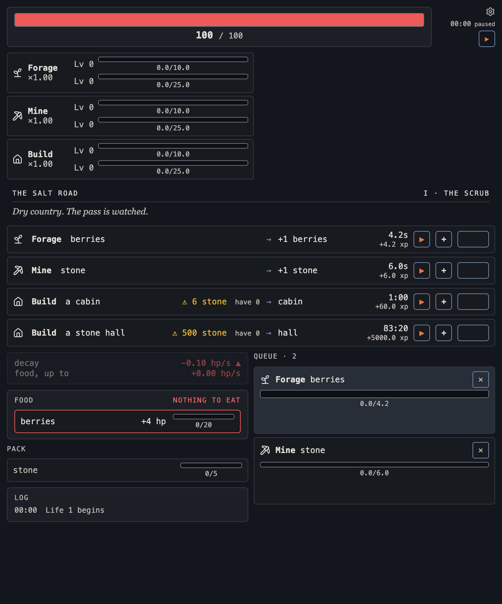

The page folds below 1280 instead of scrolling
Captured from the built change on 2026-09-23 (not a restyle), with two rows queued and the game paused. User directive: fitting a narrower desktop window is a utility, not a phone concern. At 1280 and wider nothing changes. The floor is the action row (712px) plus page padding: 732px. A phone layout is #62.


